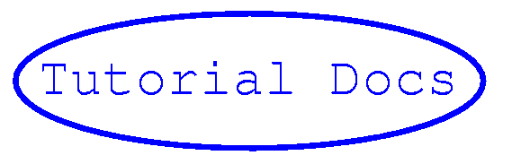

For more details of mokey click on the mokey logo:
Gandalf is free for use for both research and commercial purpises under the
LGPL (Lesser Gnu Public License). Gandalf been used on commercial
development contracts in the areas of
- Counterfeit detection
- Camera motion control
Gandalf currently contains four packages:
- Common package of simple structures and routines used by the other packages, such as memory allocation, linked lists and error handling;
- Linear algebra package with a large number of routines for matrix and vector manipulations;
- Image package defining a general purpose image structure and low-level image manipulation routines;
- Vision package containing a number of standard image processing, computer vision and geometrical routines.
- Efficient use of memory through dynamically reconfigurable structures;
- Emphasis on support of numerical algorithms, especially optimisation;
- A very flexible and efficient internal image representation,
- A comprehensive set of matrix/vector operations, incorporating implicit matrix transpose & inverse, and in-place computation where appropriate;
- Thread-safe.
- Exploitation of the computational and compilation speed advantages of C over C++ in reducing the number of layers of abstraction over the raw data, an approach we believe is appropriate for simple objects such as matrices, vectors and images.
The documentation for Gandalf comes in two parts. There is a LaTex tutorial
with examples available in HTML
(via Latex2html) or as a
PDF file.
Reference documentation for Gandalf has also been generated using
Doxygen, and is
available here.
There is a Gandalf FAQ.
Download the Gandalf source distribution from the SourceForge project page for Gandalf.
Contributions to Gandalf are welcomed. You can also become a Gandalf developer. However please conform to the Gandalf coding conventions.
